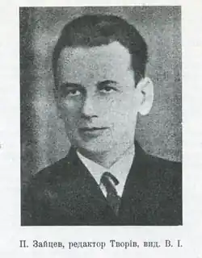

Український учений і громадсько-культурний діяч
Народився 23 вересня 1886 р. в Сумському повіті Харківської губернії. Після закінчення у 1904 р. Сумської гімназії навчався у Петербурзькому університеті. Брав активну участь в українському громадському і культурному житті в тодішній столиці імперії, вступив до Революційної української партії. Ще студентом розпочав дослідження життя і творчості Т. Шевченка, назавжди ставши одним із його найпалкіших і найвідданіших шанувальників.
Після закінчення університету викладав у середніх школах Петербурга російську, латинську, грецьку, польську, українську мови, вів при українській громаді семінар із шевченкознавства. У 1912—1914 рр. опублікував багато не відомих тоді творів і листів Т. Шевченка, документів і матеріалів до його біографії. Після Лютневої революції 1917 р. був обраний членом Виконавчого комітету Української національної ради в Петербурзі, від якої його делегували у Київ до складу Центральної ради, де він обійняв посаду начальника канцелярії Генерального секретаріату освіти. Того самого року вступив до Української партії соціалістів-федералістів, став членом її Центрального комітету. За Гетьманщини П. Зайцев був директором департаменту загальних справ міністерства освіти, редактором видавництва "Друкар" і журналу "Наше минуле", де опублікував чимало своїх статей і матеріалів з історії української літератури. У 1919—1920 рр. брав участь у визвольних змаганнях українського народу, був начальником культурно-просвітнього відділу УНР. З 1921 р. жив у еміграції у Варшаві, де викладав в університеті українську мову, плідно працював як літературознавець, співробітник Українського наукового інституту. У 1934—1939 рр. П. Зайцев підготував повне видання творів Т. Шевченка у 16 томах (вийшло 13 томів) зі своїми докладними коментарями, численними біографічними та бібліографічними примітками. Як перший том до цього видання планувалася написана ним монографія "Життя Тараса Шевченка", яку було надруковано у 1939 р. Більшовики, які саме тоді зайняли Львів, відразу конфіскували весь тираж. Лише кілька примірників потрапили на Захід, завдяки чому 1955 р. книга побачила світ. 1994 р. її було перевидано. Вона є справжньою перлиною вільного, неупередженого (без урізувань та ідеологічних спекуляцій) шевченкознавства. У 1938 р. П. Зайцева було обрано головою комісії шевченкознавства Наукового товариства ім. Т. Шевченка. З 1941 р. вчений жив у Німеччині, де працював директором Інституту шевченкознавства при Українській вільній академії наук, деканом Українського вільного університету, продовжував писати й видавати у часописах "Український вісник", "Українець" та інших шевченкознавчі дослідження. Помер 2 вересня 1965 р., залишивши незавершеними низку статей: "Етика і естетика Шевченка", "Коментарі до споминів про Шевченка його сучасників", "Творчість Шевченка" та ін.